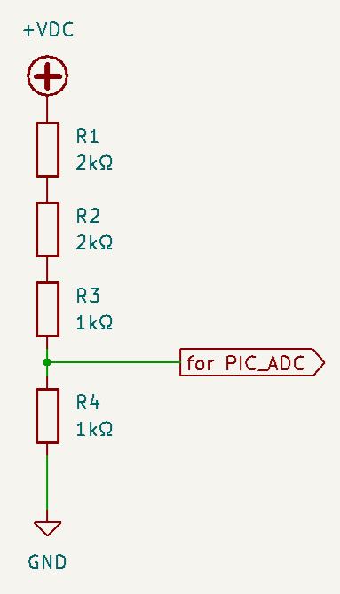
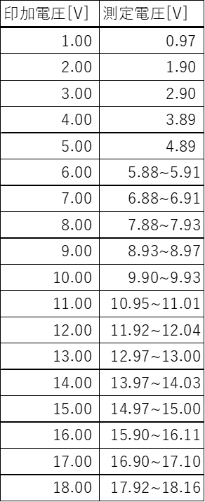
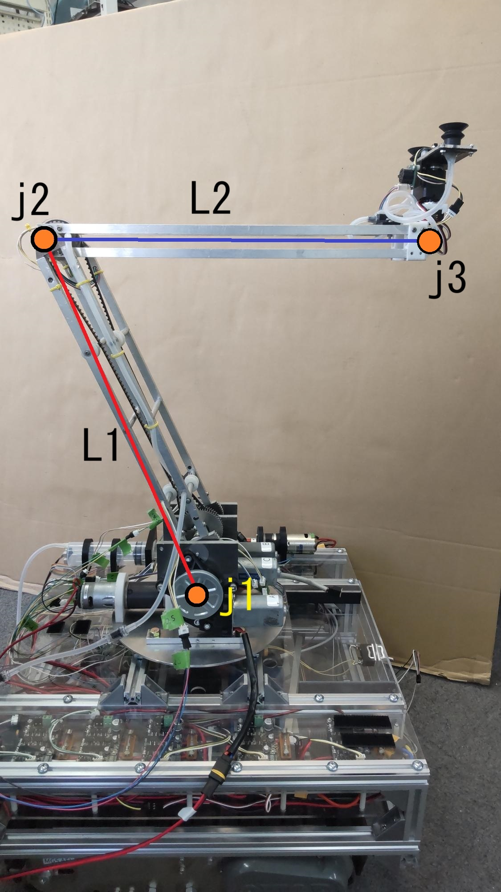

| 名称 |
MIRS2405 技術調査書 |
| 番号 |
MIRS2405-REPT-0001 |
| 版数 |
最終更新日 |
作成 |
承認 |
改訂記事 |
| A01 |
2024.10.18 |
宇佐見祥 |
|
初版 |
目次
本ドキュメントはMIRS2405 𝔊𝔘𝔏𝔏ℭの技術調査書である。
技術調査書ではメカやエレキの部品選定の基準や方法、根拠を示す。
電圧測定回路(バッテリー,降圧コンバータ出力)に使用する分圧抵抗の算出手順を示す。
測定電圧の最大値は26.8V(LiFePOバッテリー満充電時電圧)である。
一方で電圧測定をするマイコンのADCの入力最大電圧は5Vである。
よって、測定電圧の最大値がかかってもADCの入力電圧を超えないようにするため、分圧比は5:1とした。
抵抗値は5kΩと1kΩで分圧する。5kΩの抵抗はクリエイティブラボにないため、2kΩ+2kΩ+1kΩで5kΩとする。
実際にこの抵抗値で測定可能かを確かめるため、実験を行った。
実験に使用した器具
・直流安定化電源 PA18-5B
・抵抗器 2kΩ×2, 1kΩ×2
・マイコン PIC16F1938I/SP
作成した回路の回路図をfig.1に示す。

fig.1 分圧回路図
結果をtable.1に示す。
table.1 分圧回路の測定結果

使用するAVRの最大出力電圧が18Vであるため、それ以上の電圧での測定はできなかった。
table.1より電源電圧が9Vより低い領域では測定値と電源電圧の誤差が大きいが、それよりも電圧の高い領域で誤差は1%以内に収まっている。
バッテリー電圧はコンバータの出力可否を判断するために使用するため、この回路の精度でも問題ないと考えられる。
また、降圧コンバータでは24Vを12Vに降圧するため、12V付近での精度が確保できていればよい。
本実験の結果では10V以上で誤差1%以下であることが確認できているため、この分圧比は適していると考えられる。
製作するロボットアームは簡略化するとfig.2のようになる。

fig.2 簡略化したアーム
j1,j2,j3はそれぞれジョイント1,ジョイント2,ジョイント3を表す。
L1,L2はそれぞれジョイント1~2までの長さ,ジョイント2~3までの長さを表す。
L1:425(mm), L2:413(mm)
である。
ジョイント3以降の部分は省略する。
ジョイント1のアクチュエータに求められる最大トルクは、アームを最大まで伸ばし地面と水平にした状態でのトルクを求めればよい。
アームが500mlのペットボトルを持っていると仮定した状態で計算する。
アームの先にはサーボモータ(SCS215)が2個とペットボトルがある。
PIC16(L)F1938/9 データシート
MIRS2405ドキュメント管理台帳へ